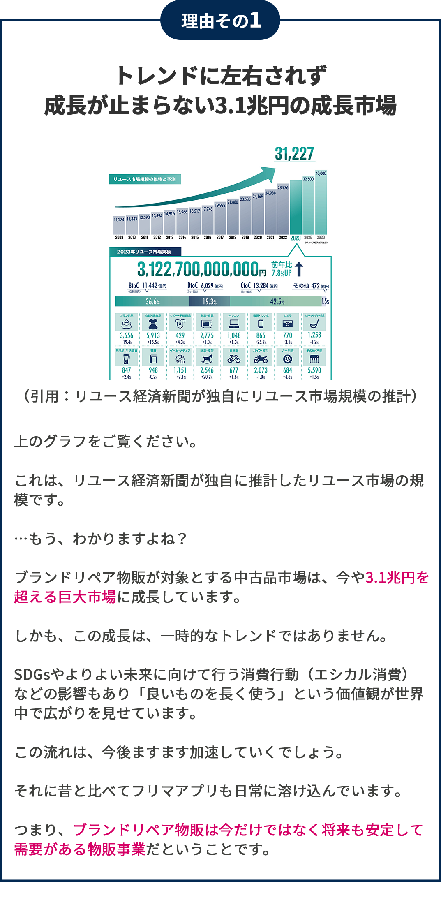
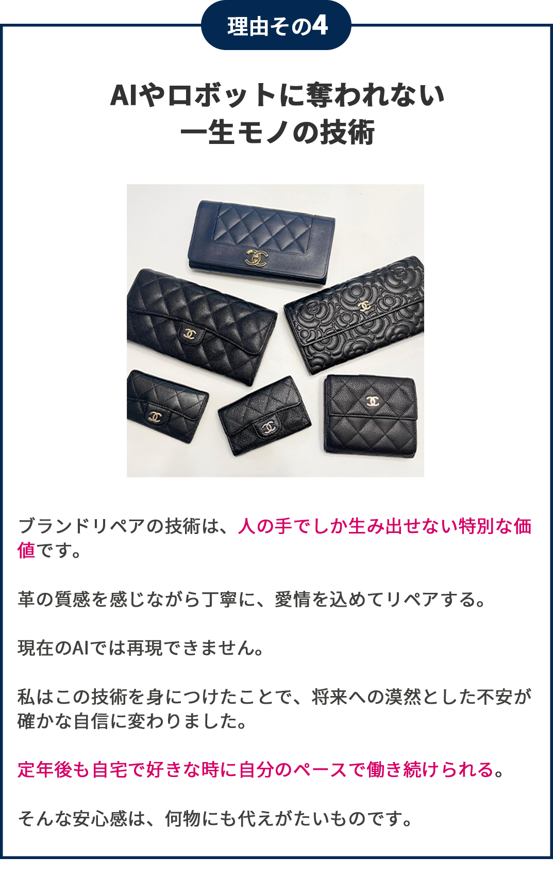

為替変動で利益は吹っ飛び…
季節商品の売れ残りに頭を抱え…
これはある50代男性の実話です
これは私の知り合いの50代男性の実話です。
数年前に「収入を増やしたい」という思いから、副業として物販を始めました。
最初は、eBayでカメラ輸出に挑戦。
しかし、為替の影響でほぼ利益はゼロ。
次に、Amazon物販に挑戦。
季節商品を大量に仕入れていたようで、クリスマスシーズンは儲かったようです。
しかし、喜びも束の間。
シーズンを過ぎると売れ残りの山でこれも利益が出ずに数ヶ月で撤退。
3度目の正直で中古靴物販に手を出しました。
これは利益はあるものの薄利多売で投下した時間に対して割に合わずほぼ引退状態。
（2025年3月時点）
この話を聞いて早くから長期的に資産として蓄積されていく物販事業に取り組んで良かったとほんとうに思いました。
あなたもトレンドに乗り換える物販事業はもう最後にしませんか？
・数年おきにトレンド物販事業に乗り換えるのは疲れる
・既存事業にも活かせる物販事業に取り組みたい
・高利益率と低在庫リスクを両立したい
・トレンドに左右されない普遍的なノウハウを習得したい
・為替の影響を受けない長期的に儲かる物販に取り組みたい
私も中国輸入物販をやって身をもって体感しました。
費用対効果も悪いし儲からないなと。
当時は会社員で3人目の子供の妊娠が発覚したタイミングで短時間で取り組めて、高利益の事業に取り組む必要があったんです。
そこで、色々調べていくうちにブランドリペア物販に出会いました。
平日は時間がないので土日の休みを使って取り組み始めました。
これが衝撃で...
毎月5、6品をリペアして販売したら1年間で本業とは別に副収入500万円を得ることができたんです。
最近は私の周りでもせどりや転売、ebay輸出に疲れた物販事業者がドンドン移行してきています。
なぜ、ブランドリペア物販が、
物販経験者の
「最後の砦」となるのか？
ー 5つの理由 ー


スキマ時間で副収入
10万円〜50万円を得られる
ブランドリペア物販とはいったい？
「完全未経験から始めるブランドリペア物販」とは、自宅の小スペースを利用して1日30分の簡単なリペア作業だけで、毎月副収入10万円〜50万円の安定収入が得られるというものです。
もちろん、本格的に事業として外注や仕組み化して毎月100万円以上の安定収入を得ることもできます。
顔出しや実名も一切なしです。
難しいパソコン作業や期限、ストレスな人間関係もなし。
「ちょっと30分時間を確保できそうだから、チャチャっとやろう」
「今月家族と1泊2日の旅行行きたいな」
「平日は既存事業が忙しいから、週末ガッツリ取り組もう」
etc…
とにかく、1日30分程度の時間が確保できる方であればOKです。
そして、私があなたに1番伝えたいことはコレです。
これまでの物販は奥さんや子供との時間を犠牲にしてストレスも我慢して生活のために頑張って取り組むモノでした。
しかし、このブランドリペア物販は奥さんや子供も一緒にワイワイ楽しく取り組める一生ものの物販事業だということです。
僕の息子や妻はもちろん。
妻のお母さんも楽しく取り組んでいます。
現在、物販事業を経営されている、副業で物販をされている関係なく最短で2、3ヶ月もあれば月収20、30万円を狙うことは十分可能です。
なぜなら、僕自身サラリーマン時代に副業で毎月5、6品をスキマ時間で取り組み1年間で副収入500万円を得ることができたからです。
私はスキマ時間からの副業スタート、そして独立・事業化まで全てを「ブランドリペア物販」で実現しました。
その経験と累計1000品以上の販売実績そして、幅広い層への講師経験で得た現場ですぐに役立つ実践的な知識とノウハウを無料オンライン講座では余すところなくお伝えしていきます。
ですので、だからこそ、あなたが今どんな状況にいようとも、
・副業から始めて、将来的に独立・事業化を目指す道筋
・確かな成功事例と具体的な手法
・それぞれの物販事業フェーズに合わせた最適な実践プラン
これら全てを具体的かつ、机上の空論ではない形で、あなたにお伝えしていきます。
そして、この方法は私がコレまで累計1000品以上の販売を繰り返して現役トッププレイヤーとして、そして累計100名以上の老若男女の方に伝授する中で試行錯誤を繰り返して編み出した独自の方法です。
スキマ時間で副収入
10万円〜50万円を得られる
「完全未経験から始める
ブランドリペア物販」
ー 無料オンライン講座の内容を紹介 ー
-
乗り換える物販事業を引退したいあなたへ…
長期安定収入＆低在庫リスク、一生モノの物販事業を実現する「ブランドリペア物販」の全貌を公開（元せどりからスタートして独立・事業化を成功させた講師がその過程を語ります）
-
【未経験OK】家事の合間に月30万円？！ スキマ時間で始める「ブランドリペア物販」とは？副収入500万円を稼いだ現役トッププレイヤーがその秘密を公開します
-
【SDGs時代の波に乗る】転売とは違う「ブランドリペア物販」のやりがいと将来性とは？リユース市場4兆円トレンドに乗る一生モノのビジネスモデルを大暴露
-
手先の器用さは関係なし！あなたにもできる理由を主婦・高齢者・経営者まで多様な成功事例と一緒にお伝えします
-
会社員時代の苦悩から脱却した講師が語る、リアルな成功体験談と、あなたの未来を変える具体的な第一歩とは？
-
【衝撃のBefore/After】数千円のブランド品が〇〇万円に！？驚きの高収益事例を証拠画像付きで大公開
-
利益率40%～80%を叩き出す仕入れ～販売までの全プロセスとは？（未経験の方はこのプロセスをそのまま行ってください...）
-
【本当にスキマ時間でOK？】 タイマーで徹底検証！家事育児の合間、1回20分～リペア作業で本当に稼げるのか？（既存物販事業と両立も余裕です）
-
1商品10万円超えも夢じゃない？！プロがリペアした高単価財布の実例を惜しみなく紹介！仕入れ値、リペア費用、販売価格…収益のカラクリを公開
-
完全未経験でも安心の3ステップ具体的な作業手順（クリーニング～色止め）を動画付きで丁寧に解説
-
主婦、会社員、経営者…あなたに合ったブランドリペア物販で成功するための完全ロードマップを公開
-
【家族との時間も収入もGET】 講師が実現した時間と場所に縛られない働き方とは？ 具体的なタイムスケジュール例＆家族との協力体制を公開
-
偽物の見分け方、古物商許可、販売時の注意点…現役トッププレイヤーがその方法とは、いったい！？
-
【99%が知らない落とし穴】 未経験からブランドリペア物販で失敗しないための必須知識を解説
-
独学の3倍速で稼ぐ！ブランドリペア物販で最短最速で結果を出すための秘策とは？
無料オンライン講座で
得られるもの
-
スキマ時間にリビングで、家族と一緒に楽しく取り組める！新しい物販事業のカタチとその全貌や仕組みを知れる
-
完全未経験・知識ゼロ・スキルなしの状態から毎月10万円〜50万円超えの収入まで具体的な道筋を知れる
-
在宅＆低リスク起業で時間とお金から自由になるための、具体的なノウハウを知れる
-
シャネル、ヴィトン、エルメス…憧れのブランド品リペアの基本手順を動画で理解できる
-
偽物、法律、クレーム…ブランドリペア物販で失敗しないためのプロ直伝の必須知識を入手できる
-
主婦、会社員、経営者…それぞれの状況に合わせた最適な始め方を知れる
-
薄利多売・在庫管理・価格競争から抜け出せる「ブランドリペア物販」の全体像と、高利益率＆低リスクで稼げる秘密が理解できる
ブランドリペア物販に
取り組まれている方より
嬉しいお声をいただいております
「給料、上がらない…でも、収入は増やしたい…」
そんな思いから数年前から副業に取り組み始めました。
最初は、eBayでカメラ輸出に挑戦。
でも、為替の問題もあって利益が出なくてすぐに撃沈…。
次に、Amazon物販にも取り組みました。
これも、売上の波が激しすぎて安定収入には程遠くやめました。
そんな物販副業を転々としていた時に出会ったのが「ブランドリペア物販」だったんです。
最初は「塗る」作業に苦戦しましたが、慣れれば簡単でした。
中古品は、新品とは違い価格競争に巻き込まれることなく、リペアの腕次第で価値が大きく変わります。
そんなリペア未経験の僕でも平日は1時間程度、日曜日にまとまった時間を確保して月30万円を安定して稼げるようになりました。
アルバイトで5万円、10万円を稼ぐのは、本業があるとほぼ無理だと思います。
でも、ブランドリペア物販なら商品3、4つをリペアして販売すれば達成できる可能性があります。
自宅で音楽や映画を楽しみながらでもできるので、体力に自信がない方、時間がない方にもオススメです。
※上記は個人の感想で効果を保証するものではありません
あの夜のことを、今でもはっきりと覚えています。
深夜の布団の中でゴロゴロしながら何気なくスマートフォンを見ていた時に偶然、小堀さんの情報を見つけました。
「家族がいるのに、新しいことを始めて本当に大丈夫だろうか…？」
正直に申し上げますと、最初は不安でいっぱいでした。
特に、家族を持つ身としてはなおさらです。
でも、妻は「やりたいなら、話をだけでも聞いてくれば」と、背中を押してくれました。
もちろんリペアの経験などありませんでした。
「私のような素人に、本当にできるのだろうか…？」と、自信を持つことができませんでした。
初めてリペアした時はボロボロだったブランド品が自分の技術で本当に綺麗になったことに驚いて、記念に写真を撮ったことを覚えています（笑）
しかし、取り組んでいくなかで一つ、また一つと商品が売れるにつれてその不安は少しずつ喜びに変わっていきました。
そして、利益が10万円、15万円…と増え、3ヶ月後には20万円を超えるまでになりました。
その時、「これなら、きっとうまくいく」と、確信に変わったのです。
今はまだ会社員ですが、このビジネス一本で生計を立てていきたいと考えています。
おかげさまで、家族との時間も増えました。
以前は難しかった外食や旅行、子供たちへのプレゼントも、今ではできるようになりました。
本当に幸せなことだと、日々感謝しております。
あの時、勇気を出して一歩踏み出していなければ、今の私はありませんでした。
※上記は個人の感想で効果を保証するものではありません
あの頃、ちょうど「老後2,000万円問題」が話題になっていた時期でした。
年金だけでは生活が厳しいと言われ、漠然とした不安を抱えていたのを覚えています。
「自宅でできる、何か良い仕事はないかしら…」
そう思っていた時、娘婿（私の奥さん）がブランド品のリペアでかなりの収入を得ているという話を聞きました。
「もしかしたら、私にもできるかもしれない…」そんな淡い期待を抱いたのが、すべての始まりです。
私は、絵を描いたり筆を持ったりすることが好きでした。
だから、好きなブランド品を自分の手で蘇らせることができるなんて、まるで夢のような話に思えたのです。
それまでの私の人生でブランド品のリペアなど、全く縁のない世界でした。
ですから、何もかもが新鮮で胸が躍るような気持ちでした。
初めて売れた時の喜びは、今でも忘れられません。
お客様から「綺麗になりました！ありがとう」というお声をいただいた時は、それが何よりの励みになりました。
今でこそ慣れましたが、始めたばかりの頃は楽しくて夜も眠れないほどでした（笑）
そうそう、リカラーができるようになって、思わぬ副産物もありました。
家族の財布や、子供たちのスポーツシューズ、そして私自身のバッグも、自分で綺麗にできるようになったのです。色々な面で節約にもなり、本当に良いことばかりです（笑）
※上記は個人の感想で効果を保証するものではありません
なぜ、無料で公開するのか？
あなたは「なぜ、そんな情報を無料で公開するのか？」そんな疑問を抱えているかもしれません。
実は今回、「1日30分から始めるブランドリペア物販」を無料で公開しようと思ったのには理由があります。
それは、この素晴らしい方法を一人でも多くの方に知ってほしいと願っているからです。
私1人でリペアできるブランド品には限りがあります。
であれば、私のノウハウを過去の私と同じように「副業に取り組みたいけど一歩踏み出せない」「スキマ時間で取り組める副業が欲しい」「ネット知識や体力不要で取り組める一生モノの副業がいい」と、思われているあなたにお伝えしたいんです。
そのほうが、1人で数千万円とかお金を稼ぐより嬉しいんです。
私自身がこのビジネスのおかげで長年のサラリーマン生活に終止符を打ち、時間的にも経済的にも、そして精神的にも自由な生活を手に入れることができました。
最初は半信半疑でした。
「本当に自宅の一畳スペースで？」「スキマ時間だけで稼げるの？」と。
いざ、取り組んで見たら意外とやれたんですよね笑
初めてリペアした4500円のシャネルの財布が2万7000円で売れた時の感動は、今でも忘れられません。
それからは、週末の限られた時間を使って、月に5、6品のブランド品をリペアし販売。
すると、最初は数万円だった副収入が、みるみるうちに増え続け、気づけば年間500万円、ついには本業の収入をも超えてしまったんです。

そして今では、時間や場所に縛られることなく、家族との時間を最優先にしながら、経済的にも精神的にも豊かな毎日を送っています。
愛する妻と、3人の子供たちと、好きな時に旅行に行き、美味しいものを食べ、将来への不安を感じることなく、心から笑い合える。そんな日々を手に入れることができました。
（今年、家族と旅行へ行ったりした時の写真です笑。
愛犬リキも）
私は本当に、この「ブランドリペア物販」と出会えてよかったと思っています。
だからこそ、かつての私のように、
「経済的な不安から解放されたい」
「時間や場所に縛られず、自由に働きたい」
「家族との時間を大切にしたい」
そう願う一人でも多くの方に、この方法を知っていただきたい。
そして、自分らしい生き方を実現してほしい。
そう強く願い、今回、無料で公開することを決意しました。
ただし、今回の無料オンライン講座では本来、有料でお伝えしている内容も含まれています。
そのため、今回は期間限定での公開とさせていただきます。
ですから、ぜひ、この機会を逃さず、今すぐ詳細を確認し、「1日30分から始められるブランドリペア物販」の全貌を今すぐ手に入れてください。
ブランドリペア物販は
特にこんな人にオススメです
- 数年おきに物販事業に乗り換えることに疲れた方
- 既存事業にも活かせる物販事業を探している方
- 既存の物販事業とシナジー効果発揮する事業を探している方
- トレンドに左右されない物販事業を探している方
- 長期的に続く物販事業をされたいと考えている方
- 今の物販事業とは別にもう1つ安定した収入源が欲しい方
- 体力的に無理なく続けられる物販事業を探している方
よくある質問
Q.みんなが中古品を買い漁ると、仕入れ商品はなくなりませんか？
A.結論：ご安心ください。ブランド品は毎日大量に出回っています。
「みんなが始めたら、仕入れる商品がなくなっちゃうんじゃないの…？」
そう心配される方もいるかもしれませんね。でも、安心してください。中古ブランド品市場はあなたが想像する以上に巨大で活気のある市場なんです。リサイクルショップに
フリマアプリに出品したりする方も年々増えています。
Q.手先が不器用ですが、リペアなんてできますか？
A.結論：まったく問題ないです。誰でもプロ級の仕上がりができます。
「私、不器用だから、細かい作業は苦手…」「リペアやったことないし、難しそう…」そう思っていませんか？実は、私も最初はそうでした。むしろ、不器用な方だったんです。でも大丈夫です。リペアの技術は練習すれば誰でも必ず上達します。自転車に乗る練習と同じ。何度も練習するうちに自然と乗れるようになりますよね。それと全く同じで慣れるので大丈夫です。
Q.世間のイメージが悪い「転売」とは全く別物でしょうか？
A.結論：全く別物です。ブランドリペア物販は感謝されるビジネスです。
転売と聞くと「安く買って、高く売る」「なんだか、悪いことをしている…」そんなイメージを持つ方もいるかもしれません。でも、ブランドリペア物販は全く違います。私たちが扱うのは本来なら捨てられてしまうかもしれない、傷や汚れで価値が下がってしまったブランド品たち。それらを丁寧にリペアしメンテナンスすることで、再び輝きを取り戻すお手伝いをする。お客様は、憧れのブランド品を新品同様の状態でしかも、お手頃な価格で手に入れることができる。つまり、私たちは、お客様に「感動」と「喜び」をお届けしているんです。私がリペアした商品を購入されたお客様から感謝の言葉をいただくたびに、この仕事のやりがいと誇りを感じています。
一生モノの物販事業に取り組み
月10万円〜30万円の
安定収入を得られたら
あなたは何がしたいですか？
・家族と、毎月、温泉旅行に行く？
・欲しかった、あのバッグや時計を買う？
・子どもの教育費や、将来の貯蓄に回す？
・それとも…思い切って、会社を辞めて、自分の夢を追いかける？
最後までお読みいただき、ありがとうございます。
私は、お金と時間の両方が手に入るこの「ブランドリペア物販」という働き方が、多くの人の人生を変える力を持っていると本気で信じています。
私自身かつては、時間とお金に追われるごく普通のサラリーマンでした。
家族を養うために毎日、必死に働いていましたが、心の中では、いつも、「このままで、本当にいいのか…？」という、漠然とした不安を抱えていました。
副業を始めたのも、「家族にもっと楽をさせてあげたい」「自分の好きなことを、我慢したくない」という、切実な思いがあったからです。
しかし、現実は甘くありませんでした。
家族との時間を犠牲にして、FXやせどりなどの巷の副業に取り組んでも思うように収入は増えませんでした。
妻からは、
「もう、そんなこと辞めて…」と、
泣かれたこともありました。
あの時の胸が張り裂けそうな思いは今でも忘れられません。
だからこそ、私は「時間」と「お金」そして「家族」との絆、その全てを大切にできる働き方を追求してきました。
そして試行錯誤の末にたどり着いたのが、この「ブランドリペア物販」だったんです。
このビジネスは単に、お金を稼ぐ手段ではありません。
あなたの「好き」を仕事にしお客様に「感動」を届け、そしてあなた自身の「人生」を豊かにする素晴らしい可能性を秘めた働き方です。
もし、あなたが物販事業に少しでも不満や不安を感じているなら、
もし、あなたが精神的に疲れるトレンド物販から卒業したいなら、
ぜひ、一度この「ブランドリペア物販」の世界をのぞいてみてください。
あなたとオンライン講座でお会いできることを心から楽しみにしています。
小堀 潤